1. 验收结论
结论：P4 本地/mock 自动化验收主路径通过，可作为进入人工体验审查的证据包。
不能声称：P4 已获人工体验认可、真实个人资料路径已通过、真实外部 provider 默认路径已通过、ASR/会议平台/自动投递/SaaS 已通过。
真实发现的问题：显式请求“生成职业事实”后，数据库和消息引用证明已生成 career_facts，顶部/移动入口也显示 1 个产物；但桌面右侧 Workbench 主体仍可能显示“还没有生成产物”的空状态。该项标记为 PARTIAL - UI FOLLOW-UP REQUIRED，不能写成完全通过。
2. 目标架构与当前实现
目标架构
- 以 Chatbox 为第一入口，承接资料导入、JD 解析、申请包、面试准备、实时文本提示和复盘路径。
- P4 UX 层包含首屏建议任务、模式/provider 状态、对话区、Workbench/产物推进台和响应式布局。
- P4C-FC 层支持本地/mock 连续对话、状态查询、下一步建议、显式工具执行和会话恢复。
- Evidence Layer 使用 Chrome/CDP 截图、自动化步骤、HTML 报告和 PRD 规格检视证明实际运行结果。
当前架构实现
- FastAPI 提供 workspace、files、profile、job、application、interview、realtime、artifact、chat、provider 和 workflow API。
- React/Vite Chatbox 初始化本地 workspace，恢复 chat session，并展示本地/provider/隐私状态。
- 默认使用
KeywordChatCore本地/mock 路由；自由聊天不调用外部 provider，明确工具意图才调用 Domain Tools。 - SQLite workspace 持久化 documents、artifacts、versions、chat sessions、tool logs 和 exports。
3. 当前可实现的用户场景路径
- 打开本地 Chatbox，看到“导入资料 / 解析 JD / 示例路径 / 自由聊求职方向”等建议任务。
- 在 1200、1280、1440、1600、1920 桌面宽度下查看三栏工作台，不出现窄屏布局左贴的大面积空白。
- 在 720 窄屏和 390 移动端查看页面，核心输入和 Workbench 入口保持可达。
- 运行 examples 示例路径，完成 9/9 步，生成职业事实、项目卡、JD 解析、匹配报告、申请包、导出文件和面试训练相关产物。
- 进行两轮自由对话，系统返回求职方向建议，不误生成 artifact。
- 询问“当前进展如何”，系统基于 workspace 返回当前无产物状态。
- 明确要求“整理资料，生成职业事实”后，系统生成
career_factsartifact；但 Workbench 主体显示存在刷新不一致，需要后续修复。 - 移动端重新打开同一 workspace，能恢复会话历史并显示推进台入口。
4. 自动化测试与命令结果
| 检查项 | 结果 | 说明 |
|---|---|---|
.venv/bin/python -m pytest | 通过 | 71 passed, 1 warning；warning 来自依赖层 PendingDeprecationWarning。 |
npm --prefix apps/chatbox run build | 通过 | TypeScript 与 Vite production build 通过。 |
| drawio XML parse | 通过 | docs/active/jobpilot-stage-gap-and-acceptance.drawio 解析出 5 个 diagram。 |
| Chrome/CDP 自动化场景 | 通过 | 48 个浏览器动作完成，生成 13 张 PNG 截图。 |
| 视觉审查 | 部分通过 | 发现 Workbench artifact 列表刷新/展示不一致。 |
5. 截图证据
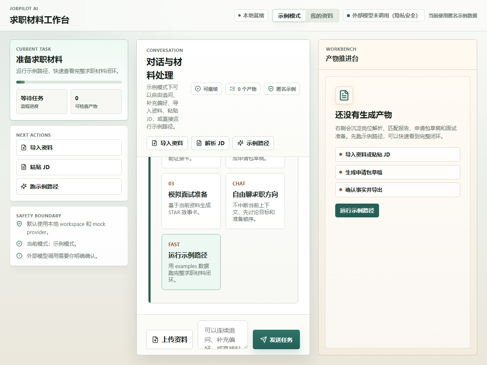
p4-automated-acceptance-20260624-201546-evidence/p4_final_initial_1200.png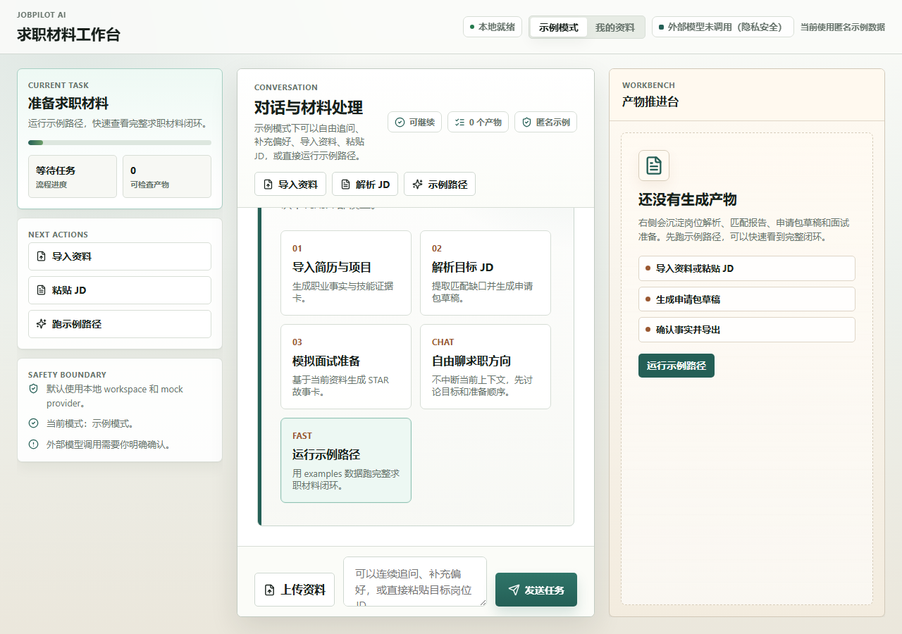
p4-automated-acceptance-20260624-201546-evidence/p4_final_initial_1280.png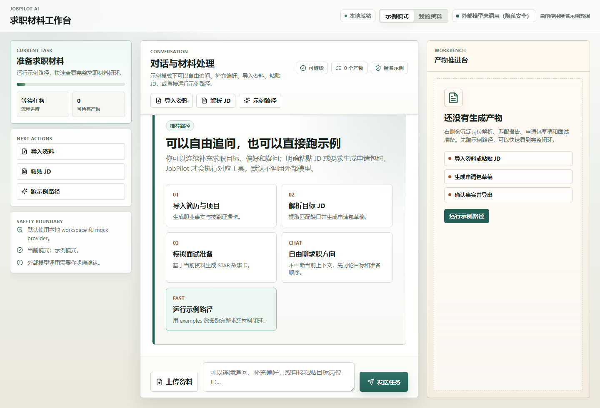
p4-automated-acceptance-20260624-201546-evidence/p4_final_initial_1440.png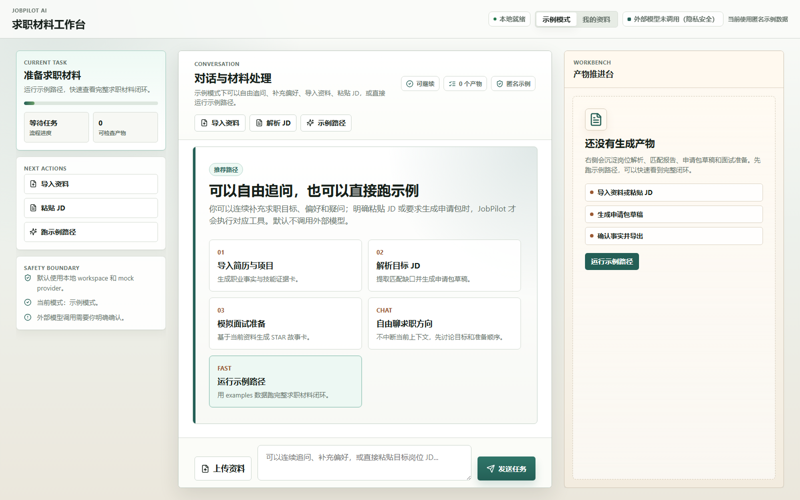
p4-automated-acceptance-20260624-201546-evidence/p4_final_initial_1600.png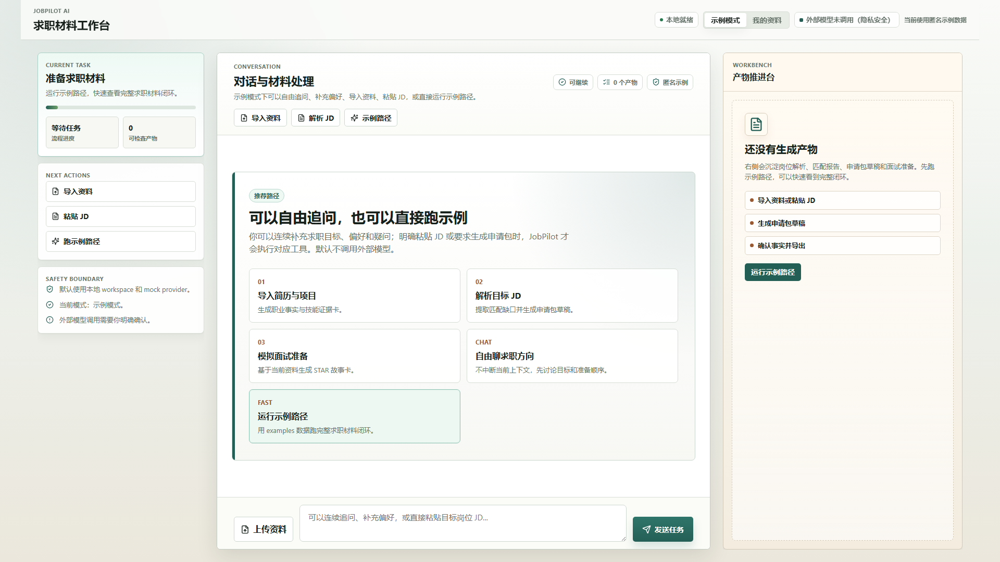
p4-automated-acceptance-20260624-201546-evidence/p4_final_initial_1920.png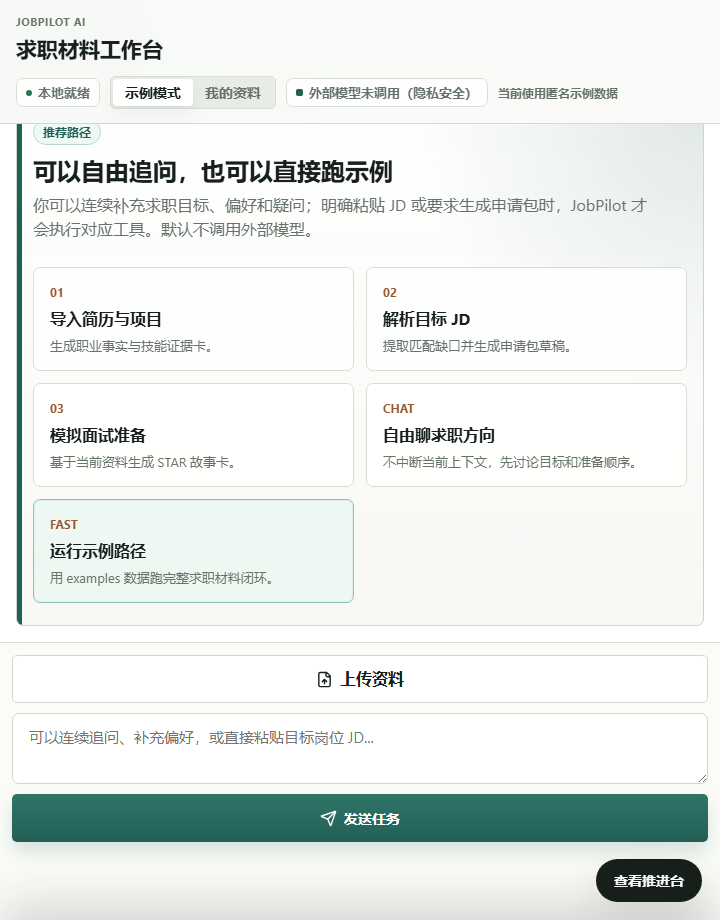
p4-automated-acceptance-20260624-201546-evidence/p4_final_narrow_720.png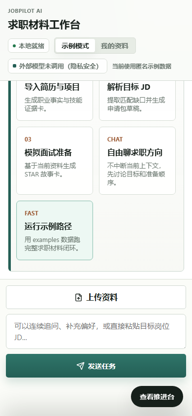
p4-automated-acceptance-20260624-201546-evidence/p4_final_mobile_390.png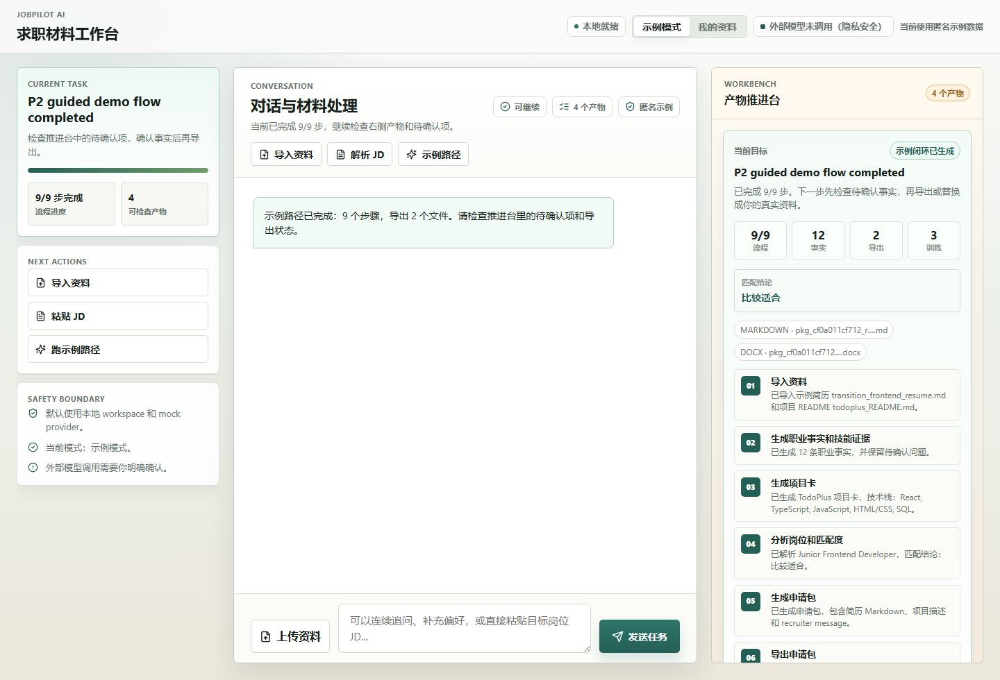
p4-automated-acceptance-20260624-201546-evidence/p4_final_guided_completed_1440.png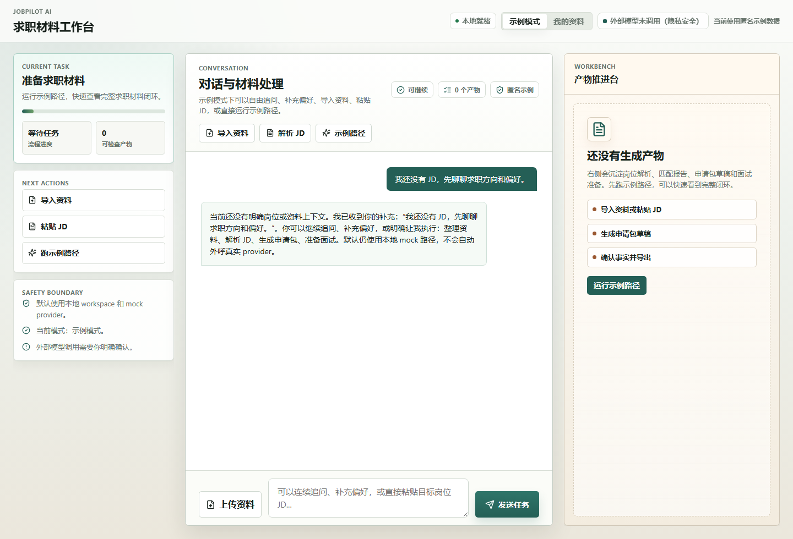
p4-automated-acceptance-20260624-201546-evidence/p4_final_fc_free_first.png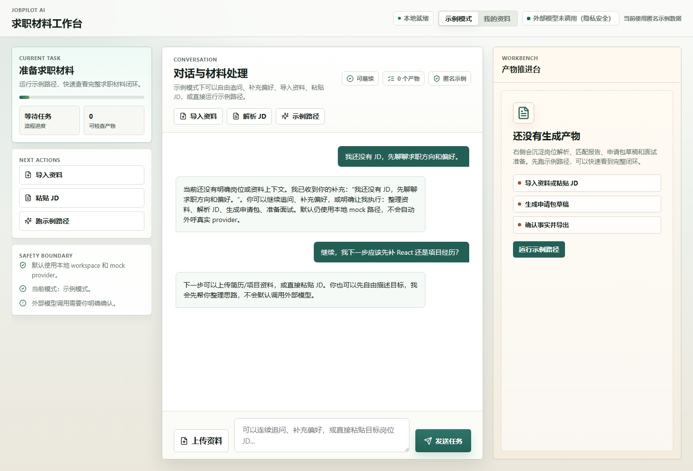
p4-automated-acceptance-20260624-201546-evidence/p4_final_fc_free_second.png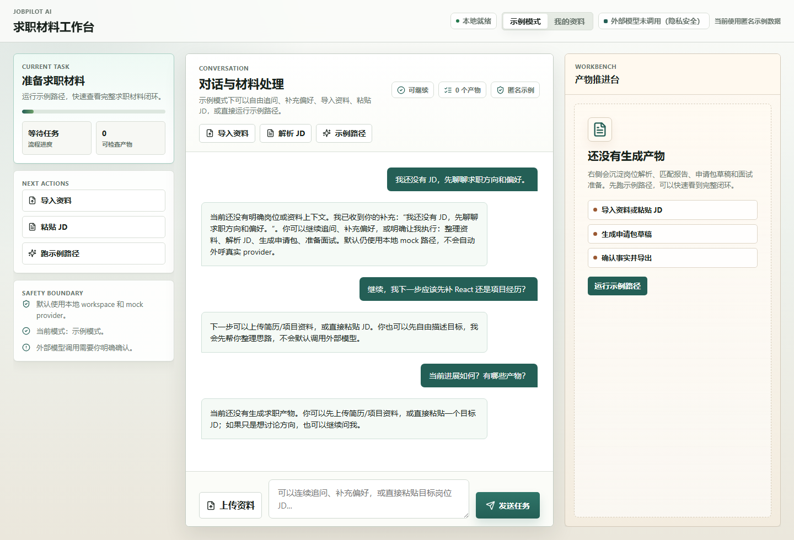
p4-automated-acceptance-20260624-201546-evidence/p4_final_fc_status.png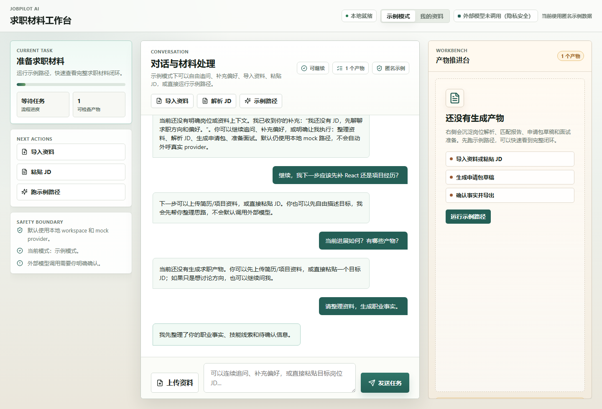
p4-automated-acceptance-20260624-201546-evidence/p4_final_fc_artifact.png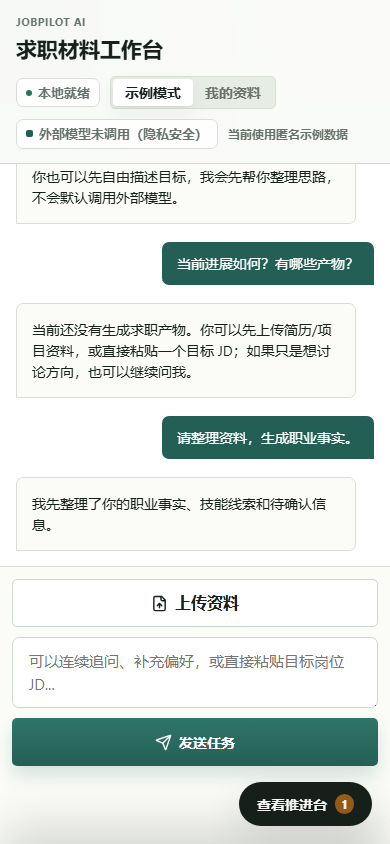
p4-automated-acceptance-20260624-201546-evidence/p4_final_fc_mobile_restore.png6. PRD 规格检视、未验证范围与风险
| 要求 | 证据 | 结论 |
|---|---|---|
| P4 首屏任务入口清楚 | 桌面和移动首屏截图显示建议任务、输入区、provider 状态和 Workbench 空状态。 | 本地/mock 自动化范围通过 |
| 多尺寸响应式工作台 | 1200/1280/1440/1600/1920/720/390 截图。 | 自动化截图通过 |
| 示例路径可完成 | 示例路径完成态截图显示 9/9 步和 4 个前端汇总产物。 | examples 路径通过 |
| 自由对话不误写 artifact | 两轮自由对话截图和 DB 检查显示普通追问后仍为 0 个产物。 | 本地/mock 范围通过 |
| 显式工具意图生成 artifact | DB 和消息引用证明生成 career_facts；截图显示计数为 1。 | 部分通过：Workbench 主体显示需修复 |
| P4 最终人工体验认可 | 本报告只做自动化验收。 | 未验证 |
| 真实个人资料 / 真实外部 provider | 本轮未使用真实个人资料，未读取 API Key，未调用外部 provider。 | 未验证 |
明确未验证范围
- 没有使用真实个人简历、真实 JD、真实 transcript 或任何私密资料。
- 没有调用真实外部 provider，也没有读取 API Key。
- 没有验证 ASR、会议平台、自动投递、SaaS 登录、多租户、Billing。
- 没有完成人工体验审查；本报告不能替代人工主观体验认可。